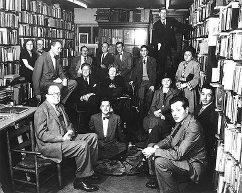

The James Joyce Society
In New York since 1947

|
|
|
|
The James Joyce Society
In New York since 1947.
|
|
|
History
(site under construction}
The Gotham Book Mart and The James Joyce Society
 History:
The James Joyce Society was founded in February
1947 at the Gotham Book Mart in New York City. Its first
member was T.S. Eliot. The Joyce bibliographer, John Slocum,
was the society's first president and Frances Steloff, founder
and owner of the Gotham, served as the its first treasurer.
In his book, Wise Men Fish Here: The Story of Francis Steloff
and the Gotham Book Mart, W.G. Rogers writes that the society's
original aims were "to introduce Joyce students to scholars,
maintain a Joyce library, further the publication and distribution
of his works, encourage the presentation of Exiles, and issue
occasional bulletins."
History:
The James Joyce Society was founded in February
1947 at the Gotham Book Mart in New York City. Its first
member was T.S. Eliot. The Joyce bibliographer, John Slocum,
was the society's first president and Frances Steloff, founder
and owner of the Gotham, served as the its first treasurer.
In his book, Wise Men Fish Here: The Story of Francis Steloff
and the Gotham Book Mart, W.G. Rogers writes that the society's
original aims were "to introduce Joyce students to scholars,
maintain a Joyce library, further the publication and distribution
of his works, encourage the presentation of Exiles, and issue
occasional bulletins."
Since its founding, the Society has expanded its membership
and goals, and at its meetings presents a variety of Joyce-related
topics. Normally four meetings are held each year with one on or close
to Joyce's birthday, February 2nd, and another around Bloomsday,
June 16th.
In 2006, the Gotham Book Mart sold its long-occupied building at 41 West 47th Street, New York City, the traditional meeting place of The James Joyce Society in the heart of the diamond district, When the Gotham moved to its new location at 16 East 46th Street, so did the meetings of the James Joyce Society. But the change only lasted until 2007.

A 1940s gathering of celebrity writers at the old Gotham Book Mart.
Nick Fargnoli, President of The James Joyce Society,
at the old Gotham in 2002
S
Old "Wise Men Fish Here" sign on 47th Street building up for sale
Brief happy days at the new East 46th Street building...
Bidders line up for the final auction ... The interior on the last day (© NY Times).
See the tribute to the old Gotham Book Mart
from the Finnegans Wake Society of New York.
Read the account of the auction in May 2007
in The New York Times. See also the extensive New York Times
archive on Joyce .

Browsers:
The joycesociety.org pages are formatted for Internet Explorer, Firefox, Safari, Netscape, Opera and similar Windows, Macintosh, and Linux browsers.
For wireless/handheld/accessibility devices and printing, use
plain text.
For hints on optimizing viewing and printing, see help.
Email:
Send email to
info@joycesociety.org
President:
A. Nicholas Fargnoli, afargnoli@molloy.edu
Webmaster: Heyward Ehrlich,
info@heywardehrlich.com.
Site created 02/02/02, format rev. 4 May 2002, 14 Nov 2003 (Ver. 1.6).
© 2002-2008 The James Joyce Society.
|